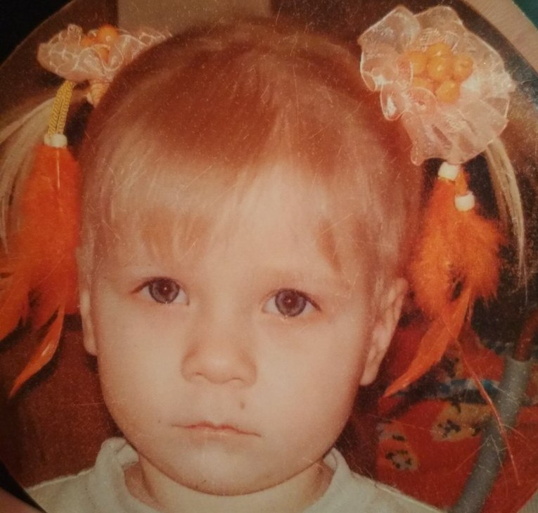
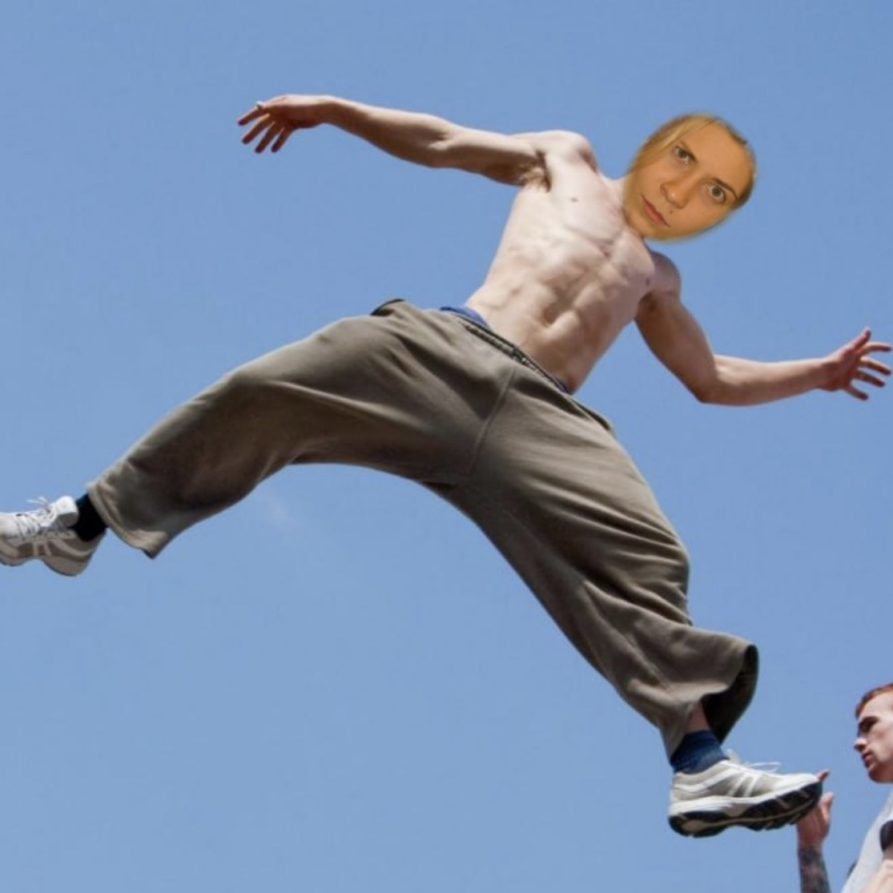
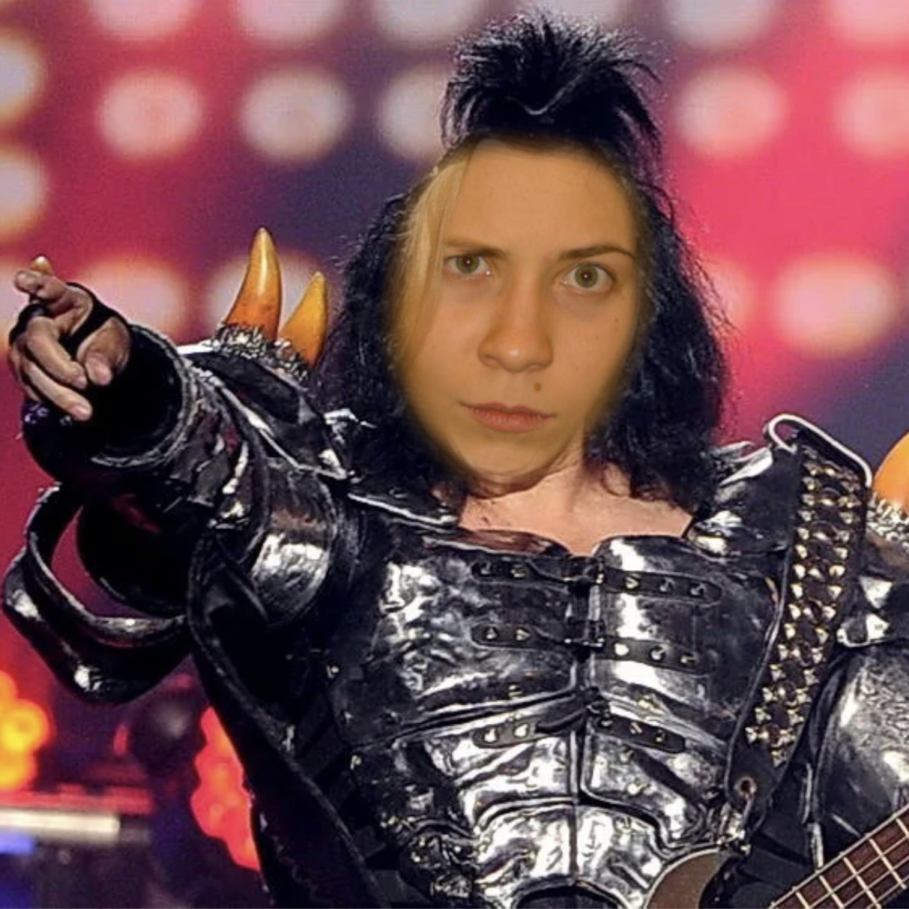
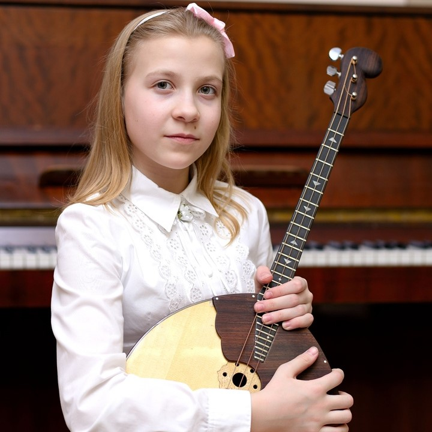
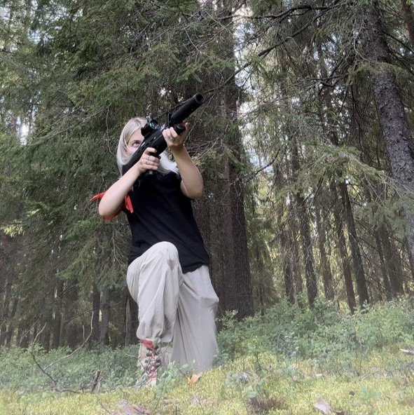
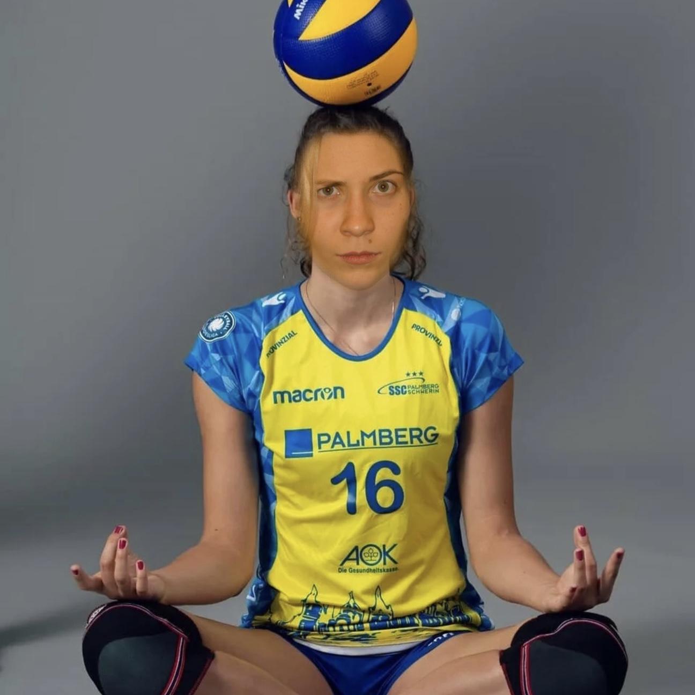
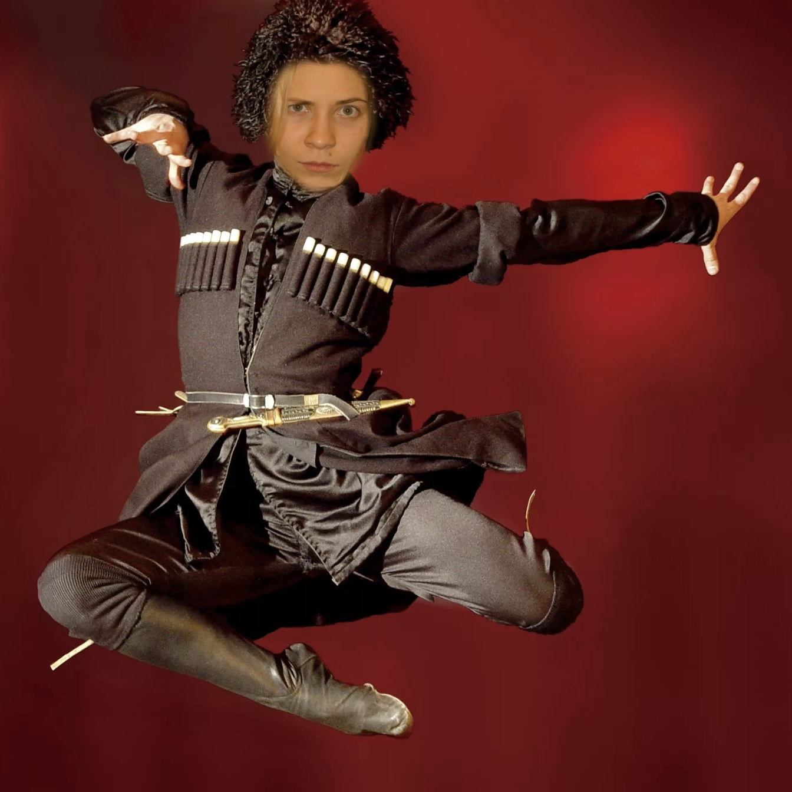

Home Biography Skills Yor feedback

Content:


Anastasia Yuryevna Kondratyeva was born on April 16, 2004 in Los Angeles in the family of producers Yuri and Svetlana Kondratyevs. As you can understand, the Kondratiev family has Russian roots, since the family moved in 2000 from Russia to the United States. Since childhood, Nastya has been interested in various activities, which are completely different from each other. For example, she loved parkour. She could often be seen in preschool at the skatepark with her older cousin, where they would do various tricks. Little Anastasia also showed her interest in music. You could often hear her angelic voice when she organized home concerts for her family. In general, Anastasia has been diversified since childhood.
The Kondratiev family had to move at the beginning of 2011 due to an increase in criminal incidents in Los Angeles.
There was no need to think long; the Kondratievs moved to St. Petersburg.
And so, Anastasia spent her school years in an equally criminal city - St. Petersburg, it’s not for nothing that this city is also known as gangster Petersburg.
Anastasia spent most of her school life at school number 138.
There, according to her, she spent the best part of her life, because she came across wonderful teachers who loved little Anastasia very much.
Moving to the other side marked a new stage in Anastasia’s life.
And she also had a hard time due to the change in her entire lifestyle.
Different climate, different hourly train, different people...
There should be further text here to fill the space, but I didn’t come up with the content, so there will only be reflections on life here.
Yo, wassup. But we also must not forget about cousin Anastasia.
All her life, Anastasia had a cousin, Alina, whose existence Anastasia had no idea about; their meeting occurred exactly 18 years later in their life.
Alina was born in Dagestan on July 17, 2004 in the family of her mother’s sister Anastasia. Alina's mother's name is Natalya Bratishkina.
The Bratishkin family has Kazakh roots, and it doesn’t matter that Svetlana is a purebred Slav, although there are Bashkir admixtures.

| Anastasia notes that throughout her life, she most often met wonderful people. This happened in little Nastya’s first Russian school. In elementary school, she had a wonderful homeroom teacher who was able to convey to the class the idea that new students should be treated very friendly and respectfully. And so began Anastasia’s life in Russia, where she met the best class of her life. There she met people with whom she continues to communicate to this day. This is not to say that the relationship was very successful. From childhood, Anastasia was a thoughtful and intelligent child who always treated all people with respect. But, unfortunately, not all peers shared the same position. And so in general, Anastasia was not a conflict child, although if she had to defend her position, she never deviated from it. |  |

Parkour

Guitar

Domra

Shooting

Voleyball

Dancing
After graduating from school, Anastasia thought a lot about what to do with her life’s work. She was very attracted to military service after she took up shooting and military training. But she realized that military service was too many restrictions, but still civil service did not attract her. She settled on the University of the Ministry of Emergency Situations, but since this is a very corrupt area, she did not pass the medical examination. And in the end I chose the Higher School of Economics, Faculty of Law.

Anastasia changed two schools in St. Petersburg:
The first school was in an ordinary residential area, where lack of culture flourished.
The second school was located in both a cultural and the most criminal area.This was the Petrogradsky district. But unlike the contingent of the first school, the contingent of the school in the Petrograd region was quite intellectual, which subsequently helped her adapt to the best university in the country.
And so Anastasia entered the Higher School of Economics at the Faculty of Law, where at first it was very difficult for her psychologically due to the fact that she did not find meaning in her studies at this faculty.
She didn't feel like she had found exactly where she belonged.